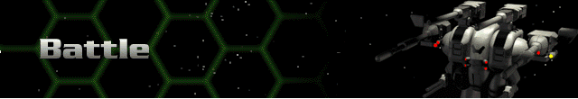

Next Unit – selects the next Herc/Bioderm unit in the rotation.
Previous Unit – selects the previous Herc/Bioderm unit in the rotation.
Defend – removes a Herc/Bioderm unit from the rotation until the next turn.
View
Movement Info. – displays the Movement control panel.
Weapon Info. – displays the Fire control panel.
Systems Info. – displays the Internal control panel.
Shields Info. – displays the Shields control panel.
Herc Damage – displays the Damage Model.
Pilot Condition – displays the Pilot Status screen.
World Conditions – displays a brief description of the planet, its atmosphere, and electromagnetic field.
Mini-Map
Each of the choices displays different attributes on the mini-map.
Show Elevation
Show Terrain Colors
Show Terrain Type
Show Sensor Range
Show Ore Locations
End Turn – if you can’t figure this one out, maybe we need to move to an easier game, like Pong.
Leave Battle – use this option if you did not elect to leave the battle when prompted to do so.